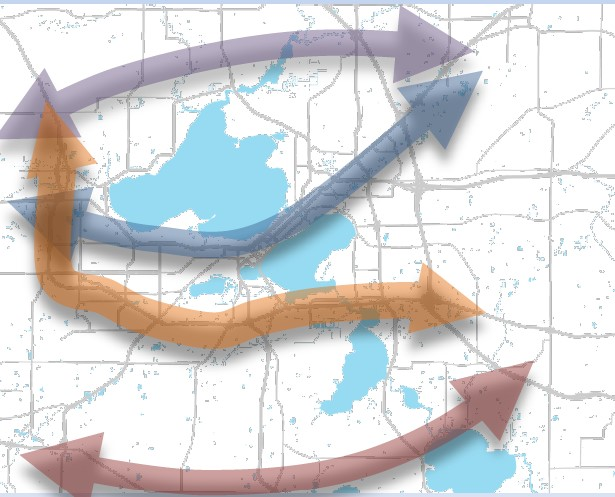

No matter what the transportation problem is, the answer usually seems to be faster and wider roads.
Madisonians have good reason to be sad. They helped create an entire generation of talented engineers who sing the same, unsustainable, anti-urban, short-sighted tune:
Widen the road, raise the speed limit, turn the road into a freeway. If the road becomes too wide for a pedestrian to cross all at once, build a traffic island in the middle, but do not narrow it to a more human scale. If the road forces people to drive their children to school because it is too unsafe for pedestrians to cross the speeding traffic, that is the price of living in the city. Leave. Become one more suburbanite who just passes through.
Engineers with a broader perspective have either retired or are not yet old enough to have the influence of their older
brethren. But times, they are a-changing, and the established generation had better get out of the way if it cant lend a hand building the new world.
Here are three examples of this way of thinking:
In July, Larry Barta from the Wisconsin Department of Transportations Southwest Region office gave a presentation
to Madisons Long Range Transportation Planning Committee (LRTPC) on his offices interest in widening the entire Beltline highway circling Madison. The price tag? At least $1 billion. The presentation included the astonishing facts that 65 percent of the cars using the highway only travel the distance of four interchanges or less and that they come from Madison itself, evidence that a well-functioning, much less costly, more environmentally friendly and socially equitable multimodal transportation system could relieve the need to expand the highway.
But the only solution Bartas generation of engineers knows is to widen, speed up, but keep driving cars, so the
proposal is to widen the highway so existing car travel can be faster.
In contrast, consider the price tag of adding a Bus Rapid Transit system to Madison that could relieve pressure on the
Beltline and other major arteries: $140-$190 million, even when including a new bus maintenance facility. Also consider the probable environmental damage widening involves, if the ongoing Verona Rd. expansion also planned by that WisDOT office is any indication. Finally, consider the social equity aspect of forcing people to use cars, whether it is to get their children safely to nearby schools or to commute to work; especially unreasonable given that almost an eighth of Madison households do not have a car.
Then in September, Jeff Held of Strand Associates reported to the LRTPC on the University Ave. Transportation Study on the near west side. University Ave. carries over 50,000 motor vehicles per weekday and, save for concerted community opposition, would have become a freeway at a time when engineers were designing freeways through every other major city in the United States (except Indianapolis). Not that the idea of putting in a freeway there has disappeared, as the graphic of WisDOTs long term plan, accompanying this article, makes clear.
But engineers know that suggesting a freeway would be unpopular, so the website coyly talks about severe congestion, crashes and cut-through traffic in neighboring residential areas instead. The recommendation? You guessed it. Widen and add traffic islands for pedestrians; do not narrow the street; dont slow down to a more human speed. If Bus Rapid Transit is added in an attempt to reduce Single Occupancy Vehicle congestion, the
recommendation is to add another lane, not use an existing one. Nearby residents are rightly concerned that their children and others are able to cross the street safely but they do not necessarily see that their issue as part of a pattern.
Next at the LRTPC? WisDOT and Strand combined along with KL Engineering, on Stoughton Road, on the East side. The major thoroughfare serves 40,000+ motor vehicles a day, and the speed limit is 55 MPH rather than 45 MPH, but the recommendation is still to turn the road into an enhanced expressway although an actual interstate freeway is not far away. The recommendation is a combination of the no-build, A, B, and C alternatives where alternative C is the total conversion of the road into a freeway. But none of the alternatives is one that is being recommended by planners who see a road as serving residents as well as motorists who are just passing through.
They recommend that the road be turned into a multimodal boulevard designed for walking, biking, and transit as well as the personal motor vehicle; that it be designed with local economic development, local safety, and local residents in mind. Residents of nearby neighborhoods also allied themselves to protest the just passing through mentality of WisDOTs plans, issuing a report that was turned into a PowerPoint presentation.
So Madison, you have created a monster. These are only three recent examples from what you have wrought. But dont let it consume you. You must make sensible plans for your neighborhoods that include multimodal transportation. Eventually, the monster will retire. Your job is to survive it.
 Madison Area Bus Advocates
Madison Area Bus Advocates